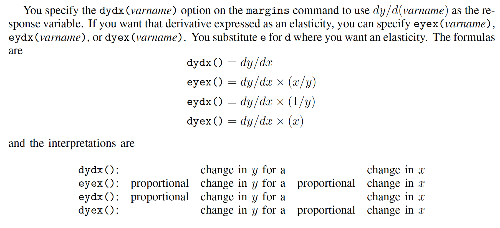

弹性与半弹性
使用书上的grilic_small.dta数据集，考虑受教育年限对工资的影响。
弹性
首先是弹性的表述，我们经常说这样一个词：“需求的价格弹性”，我们也很清楚它的意思是价格对需求的影响（而不是需求对价格的影响）。所以如果我们把他们换成数学语言，就是“y的x弹性”(英文：The elasticity of y with respect to x)。计算公式如下：
即y的变化比例除以x的变化比例。关于弹性的表述非常绕，我们可以举个这样的🌰：$x = 100, \Delta x = 1, y = 100, \Delta y = 2$，那么$\varepsilon = 2$。这样就说明，如果弹性为2，那么其含义就是，$x$变化$1\%$，$y$变化$2\%$.
实际回归的时候如何求一个y的x弹性呢？我们可以继续把上面的公式变形一下：
这就意味着如何想要求$y$的$x$弹性，我们需要求$lny$对$lnx$的偏导数。考虑工资的受教育年限弹性：
cuse grilic_small, clear
/* 或者 */
use http://www.czxa.top/cuse/g/grilic_small, clear
/* 因为数据集里面已经对数工资变量，所以我们支队长受教育年限变量取对数即可 */
gen lns = ln(s)
/* 注意ln()函数和log()函数是等价的 */
/* 回归lnw和lns */
reg lnw lns
回归结果：
. reg w s
Source | SS df MS Number of obs = 30
-------------+---------------------------------- F(1, 28) = 10.35
Model | 106091.987 1 106091.987 Prob > F = 0.0033
Residual | 287015.278 28 10250.5457 R-squared = 0.2699
-------------+---------------------------------- Adj R-squared = 0.2438
Total | 393107.266 29 13555.423 Root MSE = 101.24
------------------------------------------------------------------------------
w | Coef. Std. Err. t P>|t| [95% Conf. Interval]
-------------+----------------------------------------------------------------
s | 28.26456 8.785661 3.22 0.003 10.26795 46.26117
_cons | -41.4791 122.6431 -0.34 0.738 -292.7022 209.744
------------------------------------------------------------------------------
可以看到，lnw对lns的回归系数是1.27，也就是w的s弹性，解释为：受教育年限每延长1%，工资平均提高1.27%。。很容易理解这里计算的是平均。我们经常需要计算y关于x在某个点的弹性（也就是说更多时候，弹性不是一个常数，而是关于x的函数）。
Stata的margins命令可以用来计算y关于x在某个点的弹性：
/* 首先我们需要生成工资变量，因为数据集里面只有工资对数变量 */
gen w = exp(lnw)
/* 然后就w对s回归 */
reg w s
回归结果：
. reg w s
Source | SS df MS Number of obs = 30
-------------+---------------------------------- F(1, 28) = 10.35
Model | 106091.987 1 106091.987 Prob > F = 0.0033
Residual | 287015.278 28 10250.5457 R-squared = 0.2699
-------------+---------------------------------- Adj R-squared = 0.2438
Total | 393107.266 29 13555.423 Root MSE = 101.24
------------------------------------------------------------------------------
w | Coef. Std. Err. t P>|t| [95% Conf. Interval]
-------------+----------------------------------------------------------------
s | 28.26456 8.785661 3.22 0.003 10.26795 46.26117
_cons | -41.4791 122.6431 -0.34 0.738 -292.7022 209.744
------------------------------------------------------------------------------
我们也知道这个回归系数28.26的含义是受教育年限每延长一年，工资平均增加28块钱（币种可能是💵）。
然后我们可以使用tabulate命令查看变量s的频率频数分布表：
. tab s
schooling | Freq. Percent Cum.
------------+-----------------------------------
11 | 3 10.00 10.00
12 | 12 40.00 50.00
14 | 1 3.33 53.33
15 | 3 10.00 63.33
16 | 10 33.33 96.67
18 | 1 3.33 100.00
------------+-----------------------------------
Total | 30 100.00
根据上表，我们可以看出s的取值为11～18，所以下面我们求w关于s在每一点的弹性：
/* margins必须在回归后才能使用 */
margins, eyex(s) at(s = (11(1)18))
计算结果：
Conditional marginal effects Number of obs = 30
Model VCE : OLS
Expression : Linear prediction, predict()
ey/ex w.r.t. : s
1._at : s = 11
2._at : s = 12
3._at : s = 13
4._at : s = 14
5._at : s = 15
6._at : s = 16
7._at : s = 17
8._at : s = 18
------------------------------------------------------------------------------
| Delta-method
| ey/ex Std. Err. t P>|t| [95% Conf. Interval]
-------------+----------------------------------------------------------------
s |
_at |
1 | 1.153951 .470754 2.45 0.021 .1896548 2.118247
2 | 1.139334 .4206618 2.71 0.011 .2776474 2.00102
3 | 1.127252 .3801114 2.97 0.006 .3486291 1.905875
4 | 1.117098 .3466306 3.22 0.003 .4070576 1.827139
5 | 1.108445 .3185293 3.48 0.002 .4559675 1.760923
6 | 1.100983 .294614 3.74 0.001 .4974935 1.704472
7 | 1.094481 .2740186 3.99 0.000 .5331797 1.655783
8 | 1.088767 .2560998 4.25 0.000 .5641699 1.613363
------------------------------------------------------------------------------
如果我们想把这些弹性绘制成关于s的图像该怎么做呢？
第一种是笨方法，把这些弹性直接手动复制粘贴下来：
clear
input s e
11 1.153951
12 1.139334
13 1.127252
14 1.117098
15 1.108445
16 1.100983
17 1.094481
18 1.088767
end
line e s, xti(受教育年限) ///
yti(工资的受教育年限弹性) ///
yla(, format(%6.2f))

另外一种方法是直接利用返回值。很多Stata命令运行之后都会保留一些返回值，运行命令return list就可以查看，例如上面margins命令运行之后的返回值查看：
/* 因为刚刚clear了，所以再重新运行一下前面的命令 */
cuse grilic_small.dta, c w
gen w = exp(lnw)
/* qui 前缀可以隐藏运行结果 */
qui reg w s
qui margins, eyex(s) at(s = (11(1)18))
ret list
ret list的结果：
scalars:
r(level) = 95
r(k_at) = 1
r(k_by) = 1
r(k_predict) = 1
r(k_margins) = 0
r(df_r) = 28
r(N) = 30
macros:
r(mcmethod) : "noadjust"
r(cmd) : "margins"
r(cmdline) : "margins , eyex(s) at(s = (11(1)18))"
r(est_cmdline) : "regress w s"
r(est_cmd) : "regress"
r(emptycells) : "strict"
r(atstats8) : "values"
r(atstats7) : "values"
r(atstats6) : "values"
r(atstats5) : "values"
r(atstats4) : "values"
r(atstats3) : "values"
r(atstats2) : "values"
r(atstats1) : "values"
r(continuous) : "continuous"
r(derivatives) : "ey/ex"
r(xvars) : "s"
r(expression) : "predict()"
r(predict1_label) : "Linear prediction"
r(vcetype) : "Delta-method"
r(vce) : "delta"
r(model_vce) : "ols"
r(title) : "Conditional marginal effects"
matrices:
r(table) : 9 x 8
r(chainrule) : 1 x 3
r(at) : 8 x 1
r(V) : 8 x 8
r(Jacobian) : 8 x 2
r(error) : 1 x 8
r(b) : 1 x 8
r(_N) : 1 x 8
对比前面的margins的运行结果，可以很容易的发现我们需要的东西在r(table)里面，是以矩阵的形式保存的。我们把它读出来：
/* 首先把r(table)保存到矩阵e里面，矩阵生产使用matrix命令，简写为mat */
mat e = r(table)
/* 查看矩阵使用matrix list命令，简写为mat list */
mat list e
e[9,8]
s: s: s: s: s: s: s: s:
1. 2. 3. 4. 5. 6. 7. 8.
_at _at _at _at _at _at _at _at
b 1.1539507 1.1393339 1.127252 1.1170982 1.1084451 1.1009828 1.0944814 1.0887665
se .47075402 .42066176 .38011143 .34663063 .31852928 .29461398 .27401865 .25609981
t 2.4512816 2.7084323 2.9655831 3.2227338 3.4798845 3.7370353 3.994186 4.2513367
pvalue .02073597 .01139796 .00611555 .00321455 .00166106 .00084655 .00042681 .00021346
ll .18965477 .27764736 .34862905 .40705759 .45596746 .49749346 .53317969 .56416985
ul 2.1182466 2.0010205 1.905875 1.8271389 1.7609228 1.7044722 1.6557832 1.6133632
df 28 28 28 28 28 28 28 28
crit 2.0484071 2.0484071 2.0484071 2.0484071 2.0484071 2.0484071 2.0484071 2.0484071
eform 0 0 0 0 0 0 0 0
我们可以设计一个小循环，实现创建弹性e和变量s的数据集：
/* preserve和restore是一对命令，preserve可以预保存，当前数据集和
各种变量，restore可以恢复preserve预保存的内容。也就是说preserve
和restore之间的操作不会产生影响 */
preserve
/* 只使用clear不会清除宏变量（例如上面的矩阵） */
clear
set obs 8
gen e = .
gen s = .
forval i = 1/8{
replace s = `i' + 10
replace e = e[1, `i']
}
line e s, xti(受教育年限) ///
yti(工资的受教育年限弹性) ///
yla(, format(%6.2f))
gr export 工资的受教育年限弹性.png, replace width(2400)
restore
半弹性
同样，我们可以这样定义y的x半弹性（The semielasticity of y with respect to x）：
第一种半弹性
对于第一种半弹性：
可以这么理解，$x = 100, \partial x = 100, \partial y = 2, semi \sim \varepsilon 1 = 2$。即是说，半弹性为2的时候表示x增加100%，y增加2个单位。
如果我们想求工资关于受教育年限的半弹性：
cuse grilic_small, c w
gen lns = ln(s)
reg w lns
回归结果：
. reg w lns
Source | SS df MS Number of obs = 30
-------------+---------------------------------- F(1, 28) = 10.09
Model | 104136.237 1 104136.237 Prob > F = 0.0036
Residual | 288971.029 28 10320.3939 R-squared = 0.2649
-------------+---------------------------------- Adj R-squared = 0.2387
Total | 393107.266 29 13555.423 Root MSE = 101.59
------------------------------------------------------------------------------
w | Coef. Std. Err. t P>|t| [95% Conf. Interval]
-------------+----------------------------------------------------------------
lns | 387.0569 121.849 3.18 0.004 137.4605 636.6532
_cons | -662.8339 318.9395 -2.08 0.047 -1316.152 -9.516088
------------------------------------------------------------------------------
回归结果为387.0569。表示受教育年限翻一番，工资平均增加387.0569块钱。同样这个时候可以用margins命令求在受教育年限的每个点的半弹性，不过这个时候要用的选项是dyex()：
cuse grilic_small.dta, c
gen w = exp(lnw)
qui reg w s
qui margins, dyex(s) at(s = (11(1)18))
mat e = r(table)
clear
set obs 8
gen e = .
gen s = .
forval i = 1/8{
replace s = `i' + 10 in `i'
replace e = e[1, `i'] in `i'
}
line e s, xti(受教育年限) ///
yti(工资的受教育年限半弹性) ///
yla(, format(%6.2f))
gr export 工资的受教育年限半弹性.png, replace width(2400)

第二种半弹性
对于第二种半弹性：
可以这么理解，$\partial x = 1, \partial y = 200, y =100, semi \sim \varepsilon 2 = 2$。即是说，半弹性为2的时候表示x增加1，y增加200%。
这里求工资关于受教育年限的半弹性：
cuse grilic_small.dta, c w
reg lnw s
Source | SS df MS Number of obs = 30
-------------+---------------------------------- F(1, 28) = 11.34
Model | 1.13168716 1 1.13168716 Prob > F = 0.0022
Residual | 2.79551408 28 .099839789 R-squared = 0.2882
-------------+---------------------------------- Adj R-squared = 0.2627
Total | 3.92720124 29 .135420733 Root MSE = .31597
------------------------------------------------------------------------------
lnw | Coef. Std. Err. t P>|t| [95% Conf. Interval]
-------------+----------------------------------------------------------------
s | .0923133 .0274191 3.37 0.002 .0361478 .1484787
_cons | 4.519277 .3827556 11.81 0.000 3.735237 5.303316
------------------------------------------------------------------------------
回归系数为0.09，即使说，受教育年限每增加一年，工资平均增加0.09%。
同样可以求受教育年限每个点上的半弹性，这个时候使用eydx()选项：
cuse grilic_small.dta, c
gen w = exp(lnw)
qui reg w s
qui margins, eydx(s) at(s = (11(1)18))
mat e = r(table)
clear
set obs 8
gen e = .
gen s = .
forval i = 1/8{
replace s = `i' + 10 in `i'
replace e = e[1, `i'] in `i'
}
line e s, xti(受教育年限) ///
yti(工资的受教育年限半弹性) ///
yla(, format(%6.2f))
gr export 工资的受教育年限半弹性2.png, replace width(2400)

总结
最后可以用Stata帮助文件(margins命令: dydx选项)中的一个表格来总结弹性和半弹性：
